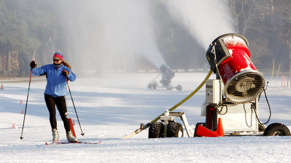
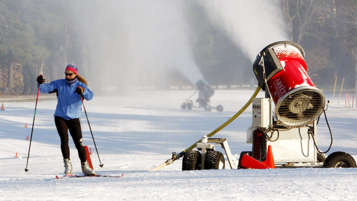

We need to save the melting flakes because flakes are fun. We only get so much flakes, and we cannot let them melt.
Image credit: Northwest Public Radio
We need to save the melting flakes because flakes are fun. We only get so much flakes, and we cannot let them melt.
Image credit: Northwest Public Radio
Melting snow flakes make us all sad : (

Image credit: michaelfastphotography